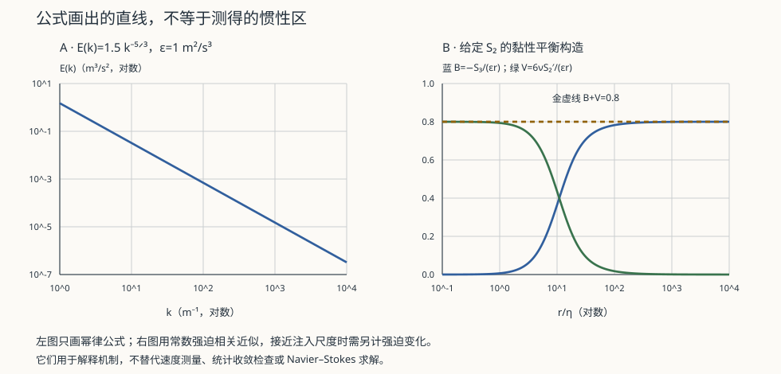

流体 III · 湍流与标度律
对标：Frisch《Turbulence》/ Pope《Turbulent Flows》/ Landau §31–34 ｜ 前置：fl-01、fl-02、asm-03（标度与 RG 的思想） 费曼称湍流为"经典物理最后一个未解的重要问题"。方程完全已知，解却无从谈起——这在物理学中极其罕见。本页讲清我们确实知道的部分：Kolmogorov 的标度律，以及它为什么既漂亮又不完备。

1. 问题：闭合困难
把速度分解为均值与脉动 \(\mathbf u = \bar{\mathbf u}+\mathbf u'\)，代入 N–S 取平均得 Reynolds 方程：
新出现的 \(\overline{u'_iu'_j}\) 未知。为它写方程，又会出现三阶矩；如此无穷递归——这就是闭合问题（closure problem），是非线性项 \((\mathbf u\cdot\nabla)\mathbf u\) 的直接后果。
工程对策【引用，非严格】：涡粘模型（\(k\)–\(\varepsilon\)、\(k\)–\(\omega\) SST）用经验关系强行闭合；LES 只解大涡、模化小涡；DNS 完全求解但代价随 \(\mathrm{Re}^{9/4}\) 增长（见 §4），只能用于低 \(\mathrm{Re}\) 研究。至今没有第一性原理的闭合方案。
2. Richardson 级串与 Kolmogorov 1941
图景：大涡从平均流获得能量 → 失稳破碎成小涡 → 逐级传递 → 在最小尺度被粘性耗散。Richardson 的名句概括了它："大涡有小涡以其速度为食……"
K41 的三条假设： 1. 局域各向同性：小尺度忘记了大尺度的方向性； 2. 惯性区：存在 \(\eta \ll r \ll L\) 的尺度范围，统计量只依赖能量耗散率 \(\varepsilon\) 与尺度 \(r\)（既不依赖注入方式，也不依赖粘性）； 3. 能量级串守恒：惯性区内传递率 = 耗散率 \(\varepsilon\)。
纯量纲分析【推导】：\([\varepsilon]=\mathrm{m^2/s^3}\)，要构造速度差 \(\delta u(r)\)：
傅里叶空间即得著名的 \(-5/3\) 律：
\(C_K\approx1.5\) 是普适常数，在大气、海洋、风洞、天体等级差极大的系统中被反复验证——这是湍流理论最坚实的成果。
Kolmogorov 微尺度：粘性主导的截断尺度
3. 唯一的精确结果：4/5 律
K41 大部分是量纲分析，但有一条从 N–S 严格导出的结果（Kolmogorov 1941）：
它是湍流理论中极少数的精确关系，且负号直接给出能量向小尺度传递的方向（三维）。二维湍流则相反——能量反向级串到大尺度（这就是大气与海洋中大涡旋能长期存在、以及木星大红斑的机制）。
4. K41 的裂缝：间歇性
Landau 的批评：\(\varepsilon\) 在空间上并非均匀，而是高度间歇——耗散集中在稀疏的强涡结构中。
后果：高阶结构函数偏离 K41 预言
实测 \(\zeta_p\) 是 \(p\) 的凹函数——这就是反常标度。多重分形模型（She–Lévêque 等）能拟合，但尚无第一性原理的推导。
这与 asm-03 的重整化群形成有趣对照：临界现象中反常指数已由 RG 解释；湍流中同样的"反常标度"至今没有对应的理论。这是本站最坦率的一处"未解"标注。
5. 练习与要点
例 1（DNS 为什么贵） 需解析到 \(\eta\)，网格数 \(\sim(L/\eta)^3\sim\mathrm{Re}^{9/4}\)，加上时间步长约束，总计算量 \(\sim\mathrm{Re}^{3}\)。\(\mathrm{Re}=10^6\) 的飞机绕流，DNS 所需算力远超任何现有超算——这就是工程必须依赖模型的原因。
例 2（大气的级串） 取 \(\varepsilon\sim10^{-3}\) W/kg、\(\nu\approx1.5\times10^{-5}\) m²/s：\(\eta\sim(\nu^3/\varepsilon)^{1/4}\sim0.5\) mm。几公里的天气尺度，最终在毫米尺度上变成热——中间跨越七个数量级的级串。
例 3（湍流为什么"混合得好"） 湍流扩散系数 \(\sim u'L \gg \nu\)。这就是搅拌咖啡的原理：分子扩散需要数小时，湍流混合只要几秒——代价是耗散了你搅拌的能量。\(\blacksquare\)
下一页：湍流从哪里来？答案是层流的失稳。线性稳定性分析、对流胞与分岔——从有序到混沌的第一步。